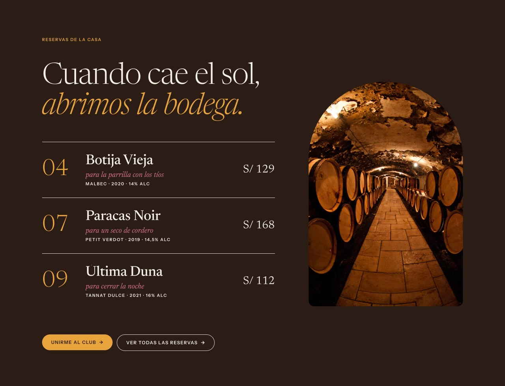
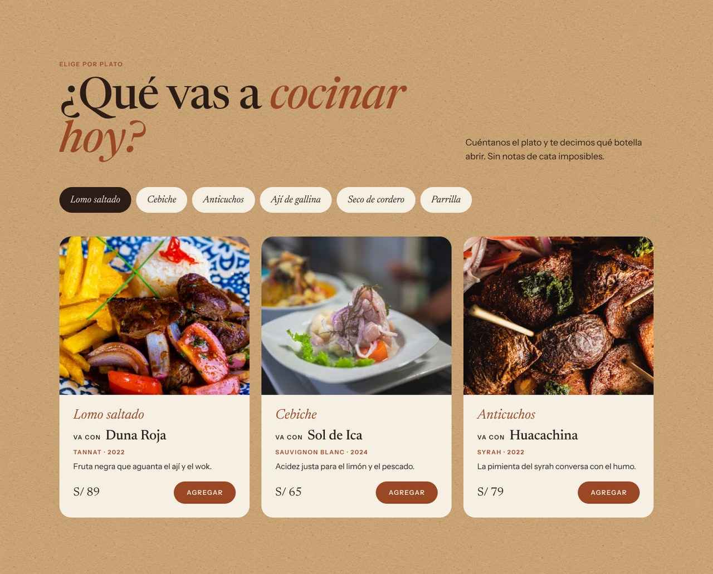
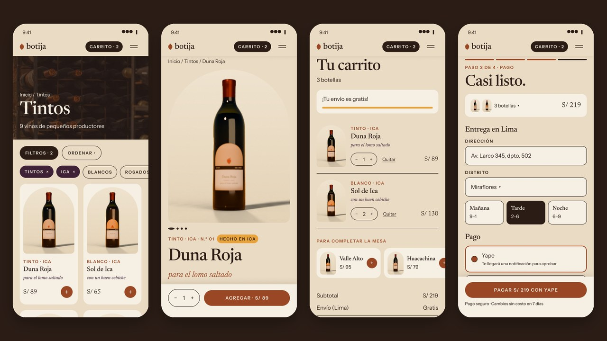
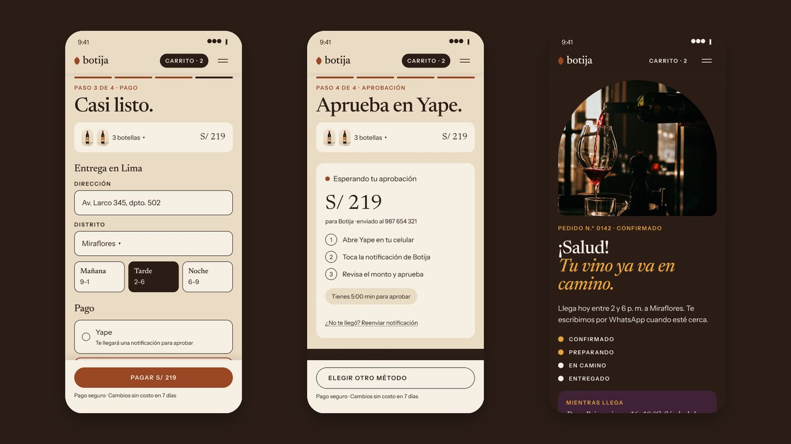

Botija
Una tienda online de vinos de pequeños productores de Ica y Cañete, donde eliges la botella por el plato que vas a cocinar y pagas con Yape, Plin o tarjeta.
Rol
Diseñador UX/UI · proyecto personal
Tipo
Propuesta de diseño · aún sin probar con usuarios
Alcance
Web responsive · 8 pantallas de escritorio y 12 móviles
Herramienta
Figma

(01) Contexto y problema
El punto de partida
Comprar vino en línea suele exigir que sepas de cepas, cosechas y notas de cata. Pero la mayoría de personas no elige así: piensa en lo que va a comer o en la ocasión. Botija es una tienda ficticia que vende vinos de familias productoras de Ica y Cañete, y quise diseñarla completa, desde la portada hasta el pago.
Pregunta de diseño
¿Cómo podría alguien que no sabe de vinos elegir una botella con confianza y pagarla como ya paga en el día a día?
(02) Dirección visual
Nace al sol. Se sirve de noche.
01
La identidad de Ica
El nombre y el símbolo vienen de la botija, la vasija de barro donde se cría el vino en Ica. Los colores salen del desierto: arena, terracota y el ámbar del atardecer.
02
Elegante, pero cercana
Los títulos usan Newsreader, una serif clásica que se lee bien en el celular, junto a una tipografía simple para textos y botones. Así se siente vinoteca sin volverse distante.
03
Del día a la noche
Al bajar por la página, los tonos pasan de la arena del día a la bodega oscura de la noche. El recorrido cuenta el lema de la marca sin necesidad de explicarlo.

(03) Decisiones de diseño
Seis decisiones para comprar sin saber de vinos
01
Elegir por plato
En la portada, la tienda pregunta «¿Qué vas a cocinar hoy?». Al tocar un plato peruano, como lomo saltado o cebiche, aparece el vino que mejor le va.
02
Cada vino con su frase
Las tarjetas dicen «para el lomo saltado» o «para la parrilla» en lugar de nombrar la uva. La ficha técnica sigue disponible, pero plegada, para quien la quiera.
03
Agregar siempre a mano
En el celular, la ficha del vino tiene una barra fija con la cantidad y el precio, para agregar al carrito sin volver a subir.
04
El envío gratis a la vista
El carrito muestra una barra de avance hasta el envío gratis y avisa cuando ya se alcanzó. El costo final no aparece como sorpresa en el pago.
05
Sugerencias para completar la mesa
El carrito propone otros vinos con un solo toque para agregarlos, sin sacar a la persona de su compra.
06
Venta responsable
La compra pide confirmar que se es mayor de 18 años y el aviso legal aparece en todas las pantallas, como exige la venta de alcohol en el Perú.

(04) Paso a paso · Comprar un vino
Del catálogo al pago
01
Filtra el catálogo
02
Revisa la ficha
03
Ajusta el carrito
04
Elige cómo pagar

(05) Pasarela de pago
Un pago pensado para cómo se paga en el Perú
El pago tiene cuatro pasos claros: datos, entrega, pago y confirmación. El monto y las botellas se ven siempre arriba, y el botón dice exactamente cuánto se va a pagar y con qué método.

A
Yape, Plin y tarjeta
Los métodos que la gente ya usa. Al elegir uno, el formulario muestra solo los campos que ese método necesita.
B
Aprobar en Yape, guiado
Tres pasos para aprobar desde el celular, con el tiempo disponible a la vista y opciones para reenviar la notificación o cambiar de método.
C
Entrega por franjas
En lugar de una hora exacta, se elige mañana, tarde o noche. Es más fácil de cumplir para la tienda y de recordar para quien compra.
D
Después de pagar
La confirmación muestra el estado del pedido y avisa que llegará un mensaje por WhatsApp cuando esté cerca, junto con un consejo para servir el vino.

Pago con tarjeta
Aprobación en Yape
Pedido confirmado
(06) Estados de error
Cuando algo sale mal, el pedido no se pierde
Cada error dice qué pasó y qué hacer, con palabras simples y sin culpar a nadie. Si falta la dirección completa, se explica por qué hace falta. Si Yape no aprueba a tiempo, se aclara que no se cobró nada y se ofrece pagar con tarjeta. Y el carrito vacío lleva de vuelta a los vinos, con algo de humor.

Dato incompleto
Pago no aprobado
Carrito vacío
(07) Validación y límites
01
Sin pruebas con usuarios todavía
El diseño no se ha probado. El siguiente paso es probar la compra completa y la pasarela de pago con personas reales.
02
Marca y datos de ejemplo
Botija, sus vinos, precios y pedidos son ficticios. Sirven para mostrar cómo funcionaría una tienda real.
03
Solo en diseño
La propuesta está en Figma. Llevarla a una tienda real implicaría conectar una pasarela de pagos y un sistema de pedidos.